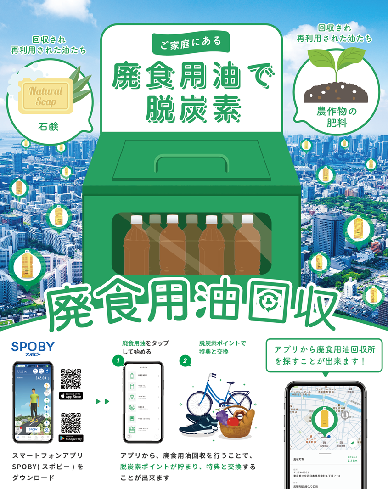

入間市×SPOBY 廃食用油回収
制作背景・意図
- 【概要】
-
- 役割 : 入間市にて、スマートフォンアプリ「SPOBY」を活用した廃食用油回収の取り組みを周知・参加促進ポスター
- 対象ユーザー : 入間市民（主婦の方やご家庭のお持ちの方）
- 掲載場所 : 入間市役所/廃食用油回収所
- アプリ（SPOBY）について :
「SPOBY」は人の行動による脱炭素・健康増進を実現するアプリです。アプリを活用し、日々の脱炭素・健康行動を記録し、可視化させ、ユーザーが楽しく気軽に行動継続を積み重ねて行けるサービスを提供しています。
- 【制作目的】
-
- 入間市内の各所において、市民が「自分にもできそうだ」と感じ、実際に行動に移せるきっかけを作ることを目的に、SPOBYアプリを活用した廃食用油回収の周知・参加促進ポスターを制作しました。
- 【背景/課題】
-
- 市民一人ひとりが「環境配慮活動」といっても何をすればいいか分からない
- 実際に一人ひとりが個々でアクションするには、規模が大きすぎたり、継続的に続かない
- 【制作時に重視したポイント】
-
- 環境配慮活動の意識の高さを訴求するのではなく、「何を」「どうやって」行えるかをシンプルに伝えることを重点において制作しました。また、この廃油回収を実施することでの結果をイラストで視覚的にわかりやすく伝えることで、理解した上で、迷わず次の行動に移れるよう設計しました。